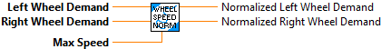

Normalizes the wheel speeds using some max attainable speed. Sometimes, after inverse kinematics, the requested speed from a/several modules may be above the max attainable speed for the driving motor on that module. To fix this issue, one can "normalize" all the wheel speeds to make sure that all requested module speeds are below the absolute threshold, while maintaining the ratio of speeds between modules.
Parameters:
- Left Wheel Demand - Desired left wheel speed demand.
- Right Wheel Demand - Desired right wheel speed demand.
- Max Speed - The absolute max speed that a wheel can reach.
Returns:
- Normalized Left Wheel Demand
- Normalized Right Wheel Demand

|
|
Left Wheel Demand |
|
|
Right Wheel Demand |
|
|
Max Speed |
|
|
Normalized Left Wheel Demand |
|
|
Normalized Right Wheel Demand |